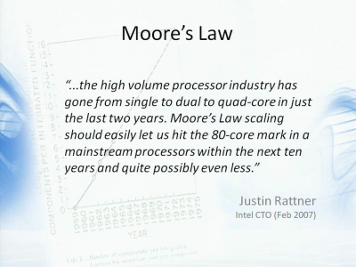
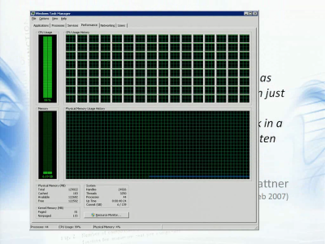
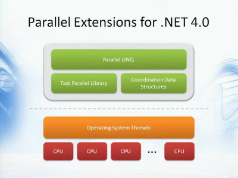
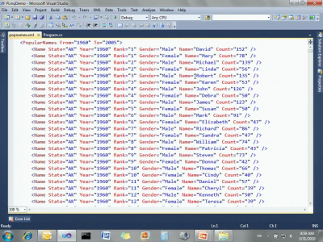
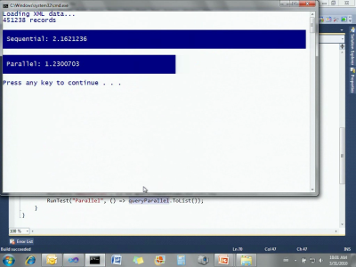
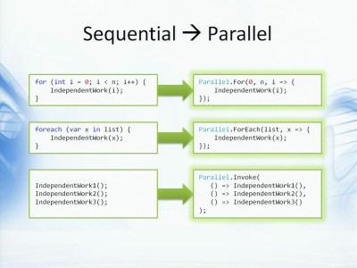

编程语言的发展趋势及未来方向（6）：并发
这是Anders Hejlsberg在比利时TechDays 2010所做的开场演讲。
http://img.zhaojie.me/blog/prog-lang-trends-anders/39-thumbnail.png
好，最后我想谈的内容是“并发”。
http://img.zhaojie.me/blog/prog-lang-trends-anders/40-thumbnail.png
听说过摩尔定律的请举手……几乎是所有人。那么多少人听说了摩尔定律已经结束了呢？嗯，还是有很多人。我有好消息，也有坏消息。我认为摩尔定律并没有停止。摩尔定律说的是：可以在集成电路上低成本地放置晶体管的数目，约每两年便会增加一倍。有趣的是，这个定律从60年代持续到现在，而从一些迹象上来看，这个定律会继续保持20到30年。
摩尔定理有个推论，便是说时钟速度将根据相同的周期提高，也就是说每隔大约24个月，CPU的速度便会加倍──而这点已经停止了。再来统计一下，你们之中有谁的机器里有20GHz的CPU？看到了没？一个人都没有。但如果你从五年前开始计算的话，现在我们应该已经在使用20GHz的CPU了，但事实并非如此。这点在五年前就停止了，而且事实上最大速度还有些下降，因为发热量实在太大了，会消耗许多能源，让电池用的太快。
 http://img.zhaojie.me/blog/prog-lang-trends-anders/41-thumbnail.png
有些物理方面的基础因素让CPU不能运行的太快。然而，另一意义上的摩尔定理出现了。我们还是可以看到容量的增加，因为可以在同一个表盘上放置多个CPU了。目前已经有了双核、四核，Intel的CTO在三年前说，十年后我们可以出现80核的处理器。
 http://img.zhaojie.me/blog/prog-lang-trends-anders/42-thumbnail.png
到了那个时候，你的任务管理器中就可能是这样的。似乎有些吓人，不过这是我们实验室中真实存在的128核机器。你可以看到，计算能力已经完全用上了。这便是个问题，比如你在这台强大的机器上进行一个实验，你自然希望看到100%的使用状况，不过传统的实验都是在一个核上执行的，所以我们面临的挑战是，我们需要换一种写程序的方式来利用此类机器。
我的一个同事，Herb Sutter，他写过一篇文章，谈到“免费的午餐已经结束了”。没错，我们已经不能写一个程序，然后对客户说：啊，未来的硬件会让它运行的越来越快，我们不用关心太多──不，已经不会这样了，除非你换种不同的写法。实话说，这是个挑战，也是个机遇。说它是个挑战，是因为并发十分困难，至今我们对此还没有简单的答案，稍后我会演示一些正有所改善的东西，但……这也是一个机遇，在这样的机器上，你的确可以用完所有的核，这样便能获得性能提高，不过做法需要有所不同。
多核革命的一个有趣之处在于，它对于并发的思维方式会有所改变。传统的并发思维是在单个CPU上执行多个逻辑任务，使用旧有的分时方式、时间片模型来执行多个任务。但是，你想一下便会发现如今的并发情况正好相反，现在是要将一个逻辑上的任务放在多个CPU上执行。这改变了我们编写程序的方式，这意味着对于语言或是API来说，我们需要有办法来分解任务，把它拆分成多个小任务后独立的执行，而传统的编程语言中并不关注这点。
 http://img.zhaojie.me/blog/prog-lang-trends-anders/43-thumbnail.png
使用目前的并发API来完成工作并不容易，比如使用Thread，ThreadPool，lock，Monitor等等，你无法太好的进展。不过.NET 4.0提供了一些美妙的事物，我们称之为.NET并行扩展。它是一种现代的并发模型，将逻辑上的任务并发与我们实际使用的的物理模型分离开来。以前我们的 API都是直接处理线程，也就是（上图）下方橙色的部分，不过有了.NET并行扩展之后，你可以使用更为逻辑化的编程风格。任务并行库（Task Parallel Library），并行LINQ（Parallel LINQ）以及协调数据结构（Coordination Data Structures）让你可以直接关注逻辑上的任务，而不必关心它们是如何运行的，或是使用了多少个线程和CPU等等。
 http://img.zhaojie.me/blog/prog-lang-trends-anders/44-thumbnail.png
下面我来简单演示一下它们的使用方式。我带来了一个PLINQ演示，这里是一些代码，读取XML文件的内容。这有个50M大小的 popname.xml文件，保存了美国社会安全数据库里的信息，包含某个洲在某一年的人口统计信息。这个程序会读取这个XML文件，把它转化成一系列对象，并存放在一个List中。然后对其执行一个LINQ语句，查找所有在华盛顿名叫Robert的人，再根据年份进行排序：
Console.WriteLine("Loading XML data..."); var popNames = (from e in XElement.Load("popnames.xml").Elements("Name") select new { Name = (string)e.Attribute("Name"), State = (string)e.Attribute("State"), Year = (int)e.Attribute("Year"), Count = (int)e.Attribute("Count") }) .ToList(); Console.WriteLine(popNames.Count + " records"); Console.WriteLine(); string targetName = "Robert"; string targetState = "WA"; var querySequential = from n in popNames where n.Name == targetName && n.State == targetState orderby n.Year select n;
我们来执行一下……首先加载XML文件，然后进行查询。利用PLINQ我们可以做到并行地查询。我们只要拷贝一份代码……改成 queryParallel……现在我唯一要做的只是在数据源上使用AsParallel扩展方法，这样便会引入一套新的类型和实现，此时相同的LINQ 操作使用的便是并行的实现：
var queryParallel = from n in popNames.AsParallel() where n.Name == targetName && n.State == targetState orderby n.Year select n;
我们重新执行两个查询。
 http://img.zhaojie.me/blog/prog-lang-trends-anders/45-thumbnail.png
再次加载XML数据……并行实现使用了1.5秒，我们再试着运行一次，一般结果会更好一些，现在可能刚好在执行一些后台任务。一般我们可以得到更快的结果……这次比较接近了。现在你可以观察到，我们并不需要做太多事情，便可以在我的双核机器上得到并发的效果。
http://img.zhaojie.me/blog/prog-lang-trends-anders/46-thumbnail.png
这里我无法保证说，我们只要随时加上AsParallel便可以得到两倍的性能，有时可以有时不行，有些查询能够被并行，有的则不可以。然而，我想你一定同意一点，使用如LINQ这样的DSL能够方便我们编写并行的代码，也更有可能利用起并行效果。虽然不是每次都有效，但是尝试的成本也很低。如果我们使用普通的for循环来编写代码，在某个地方使用线程池等等，便很容易在这些API里失去方向。而这里我们只要简单地尝试一下，便能知道是否可以提高性能了。
 http://img.zhaojie.me/blog/prog-lang-trends-anders/47-thumbnail.png
这里你已经看到我使用的LINQ查询，而现在也有很多工作是通过循环来完成的。你可以想象主要的运算是从哪里来的，很自然会是在循环里操作数据。如果循环的每个迭代都是独立的，便有很大的机会可以利用并发操作──我知道这里是“如果”，不过长期来看则一定会出现这样的情况。这时候便可以使用并行扩展，或者说是.NET并行扩展里的新API，把循环转化成并行的循环，只要简单的改变……几乎只要用同样的循环体把for重构成Parallel.For 就行了。如果你有foreach操作就可以使用Parallel.ForEach，或是一系列顺序执行的语句也可以用上Parallel.Invoke。此时任务并行库会接管并执行这些任务，根据你的CPU数量使用最优化的线程数量，你不需要关注更深的细节，只需要编写逻辑就可以了。
http://img.zhaojie.me/blog/prog-lang-trends-anders/48-thumbnail.png
就像我说的那样，可能你会有独立的任务但也可能没有，所以很多时候我们需要编程语言来关注这方面的事情。比如“隔离性（Isolation）”。例如，编译器如何发现这段代码是独立的，可以安全地并发执行，好比我创建了一个对象，在分享给其他人之前，我对它的改变是安全的。但是我一旦把它们共享出去了，那么它们便不安全了。所以如果我们的类型系统可以跟踪到这样的共享，如Linear Types── 这在学术界也有一些研究。我们也可以在函数的纯洁性（Purity）方面下功夫，如关注某个函数是否有副作用，有些时候编译器可以做这方面的检查，它可以禁止某些操作，以此保证我们写出纯函数。还有便是不可变性（Immutability），目前的C#或VB，我们需要额外的工作才能写出不可变的代码── 但本不该这样，我们应该在语言层面上更好的支持不可变性。这些都是在并发方面需要考虑的问题。
如果说有哪个语言特性超出这个范畴，我想说这里还有一个原则：你不该期望C#中出现某个特别的并发模型，而应该是一种通用的，可用于各种不同的并发场景的特性，就像隔离性、纯洁性及不可变性那样。语言拥有这样的特性之后，就可以用于构建各种不同的API，各种并发方式都可以利用到核心的语言特性。
- 编程语言的发展趋势及未来方向（1）：历史回顾及趋势概述
- 编程语言的发展趋势及未来方向（2）：声明式编程与DSL
- 编程语言的发展趋势及未来方向（3）：函数式编程
- 编程语言的发展趋势及未来方向（4）：动态语言
- 编程语言的发展趋势及未来方向（5）：元编程
- 编程语言的发展趋势及未来方向（6）：并发
- 编程语言的发展趋势及未来方向（7）：总结